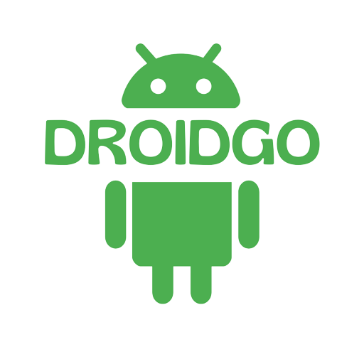

Projeto:
O jogo é inspirado nas versões androids 1.5 e 1.6 que foram nomeadas em homenagem a doces. Acesse aqui o site Android History para conhecer a sequência das versões "adocicadas" e o que cada uma trouxe para o sistema Android.
Faça parte da comunidade!
O publico alvo do jogo são jovens de 14 a 20 anos, temos o objetivo de mostrar um pouco sobre a história do mascote android e a nossa forma de fazer isso foi criando um Game para a galera que gosta de tecnologia se divertir.